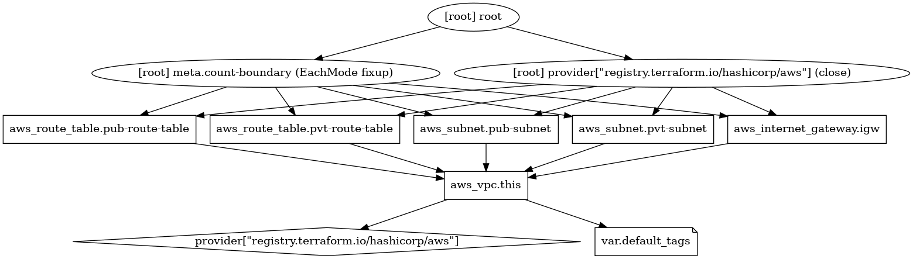
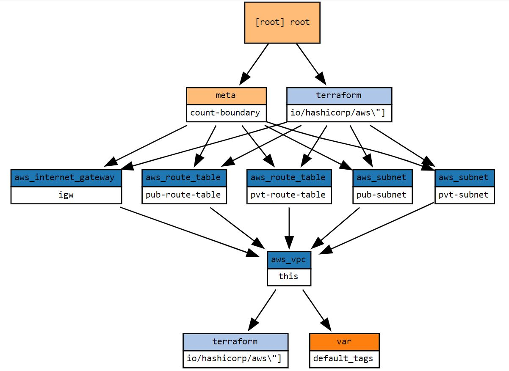

Resource Graphs
Terraform builds a dependency graph from the Terraform configurations and walks this graph to generate plans, refresh state, and more.
To generate a visual representation of Configuration use this command
terraform graph | dot -Tpng > graph.png
To generate a visual representation of Execution plan use this command
terraform graph -type=plan | dot -Tpng > graph.png
The output is in the DOT format, which can be used by GraphViz to generate charts.

You need to know the following about dependency graphs:
- During an apply, the bottom nodes are evaluated first and the higher nodes are evaluated later.
- Cyclical dependencies are not allowed.
- Nodes with zero dependencies are created first and destroyed last
- You cannot guarantee any ordering between nodes at the same dependency level.
Blast radius is another great tool of graph representation
